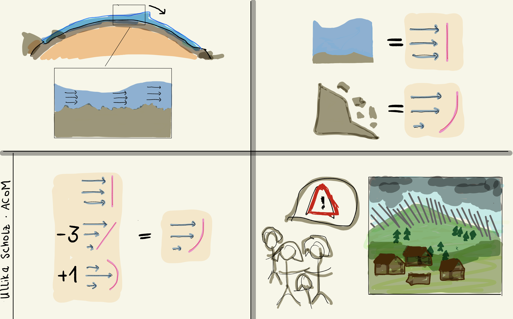

back
In science, you usually try to find more information. My job, however, is to get rid of some information. Let me explain:
Natural phenomena can be described via equations. This is something you know from high school. You throw a ball, and the path of the ball is described by an equation. I work with an equation system, that describes the motion of a fluid with a free surface. For instance my system is used to describe the movement of a tsunami wave through the ocean.
The system contains lots of information. So much, that computers are not able to solve it. There are so many things that influence the path of a tsunami through the ocean. Think of all the little rocks at the bottom of the sea that theoretically influence the path of the wave.
Intuitively we know that we can neglect these unimportant details and focus on the big picture.
Similarly,c lose to the surface the fluid usually moves a tiny bit faster or slower than the water close to the ground. This is another effect that is usually neglected.
I deal with cases, where these differences are not so tiny and we have to come up with a creative idea. Let's take a look at these arrows and purple lines.
This is a picture of a velocity profile. In this example the speed is roughly the same at all heights of the fluid and we can neglect any tiny differences. This is equivalent to saying that the profile is just a vertical line.
Look a the second example. Here the vertical velocity profile looks more interesting. And it is a bad idea to neglect the differences. But keeping every detail is also not an option. So we describe the profile as a composite of very simple shapes - the basis functions.
This particular profile can be approximated by the sum of a constant, a linear, and a quadratic basis function.
With the help of basis functions as "building blocks", we can describe complex shapes in very simple terms. Computers and mathematicians can deal with the system but a the same time it is very exact.
When do we need this approach?
Actually, in the case of a tsunami wave in deep water, the vertical velocity profile looks much like a vertical line, just as in the first example. Therefore we do not really need our approach here.
But there are other fluids like mud or gravel. They flow down mountains, this is what happens in a landslide. Because of the friction that these fluids cause at the bottom, the speed at the ground is much smaller than to the speed in the upper layers of the fluid. Here our equations are of great benefit!
Today i tried to show you how a clever reduction can eventually help keeping people safe.

Thank you.